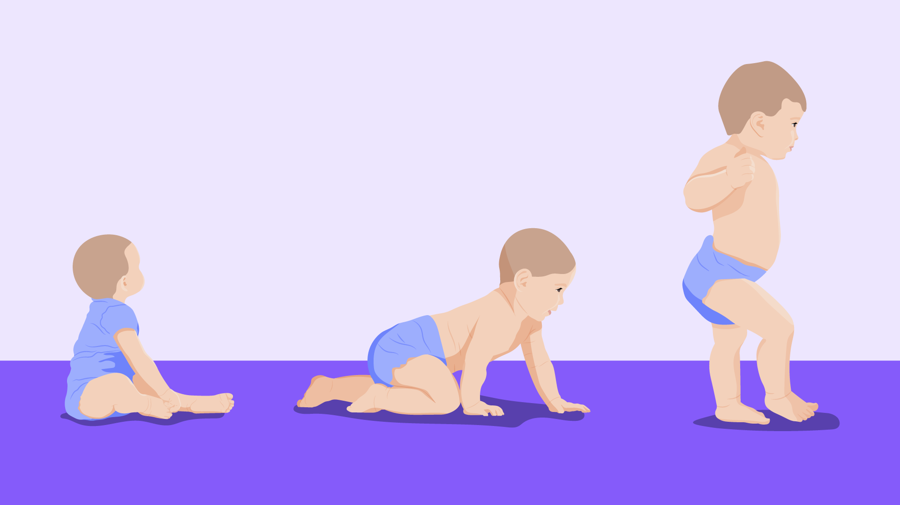

Desenvolvimento Infantil
Esta área da Psicologia do Desenvolvimento concentra-se nos primeiros estágios da vida, desde o nascimento até a adolescência. Os psicólogos estudam o desenvolvimento cognitivo, emocional, social e físico das crianças, observando como elas adquirem habilidades, linguagem e identidade ao longo dessas fases críticas.